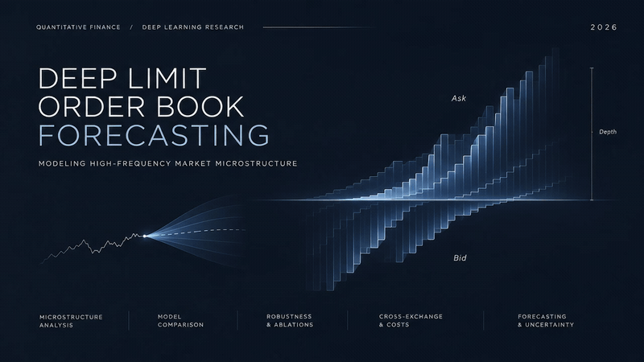

public-data reproduction
deep limit
order book
forecasting.
a public-data reproduction comparing directional forecasts and the timing of complete predicted transactions.

5 equities · 2 crypto venues
alongside 3 simple baselines
10 · 50 · 100 book updates
original plotly gallery
saved experiments
models and baselines
compare mcc, macro f1, transaction overlap and coverage across the saved runs.
inspect the exact numbers
| model | mcc | macro f1 | overlap | coverage | defined mcc runs |
|---|
logistic leads average mcc. persistence leads transaction overlap. classification skill and signal timing measure different things.
data samples
seven order books
microstructure changes the task. inspect the measured characteristics of each book.
book statistics: microstructure.csv · evaluation intervals: evaluation_windows.csv . class counts describe the saved evaluation interval, not every horizon.
reproduction protocol
inputs, models and evaluation
one consistent protocol, four independently implemented neural architectures.
10 price and size levels
on each side of the book
100 historical updates
× 40 input features
down, stable, up
at 10, 50, 100 events
classification, coverage
and transaction timing
additional experiments
calibration, transfer and execution assumptions
confidence thresholds
inspect confidence, retained coverage and held-out temperature calibration together.
inspect the evidence cross-exchange transfercross-exchange transfer
compare real binance and coinbase snapshots, with explicit time separation.
compare the venues friction & uncertaintyfees, delay and uncertainty
explore fee and delay sensitivity, seeds, block bootstrap and training budgets.
explore the extensionsproject files
notebook, presentation and figures
read the guide, inspect the saved outputs or run the experiments.
read the study
findings, scope, setup and use cases in one place.
open readme the presentationthe research, in 18 slides
motivation, architecture, evidence and limitations.
open presentation the full dashboardall 27 interactive views
the complete original gallery remains available.
open dashboardscope and limitations
what the study covers
what exactly is reproduced?
the method of deep limit order book forecasting: a microstructural guide (2025), using public samples. the original licensed 15-stock, 2017–2019 panel is unavailable. this study uses different dates, a smaller budget and short evaluation windows; it does not replicate the paper’s numerical benchmark.
does transaction overlap measure profitability?
no. it compares complete directional sequences derived from predicted and true labels. it is not a fill probability, realized p&l, or evidence of a profitable strategy.
how long are the evaluation intervals?
the first 4,096 eligible test windows span about 12 seconds to 13 minutes, depending on the book. forecast horizons count book updates rather than seconds. daily-bar extensions are separate experiments.
can i inspect the study without training?
yes. the executed notebook, saved results, presentation and original interactive dashboard are included. raw vendor data must be acquired separately for a complete rerun. see the reproduction guide .
code and saved results